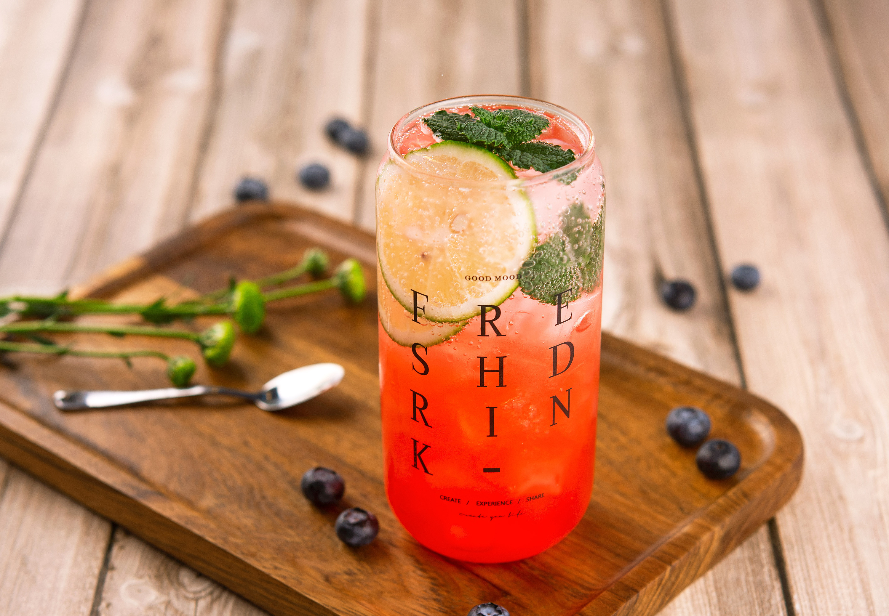

饮料是供人饮用的液体，它是经过定量包装的，供直接饮用或按一定比例用水冲调或冲泡饮用的，乙醇含量（质量分量）不超过0.5%的制品，饮料也可分为饮料浓浆或固体形态，它的作用是解渴、补充能量等功能。
加工制造的供饮用的液体，如汽水、果子露、茶等。徐珂《清稗类钞·饮食·饮料食品》：“茶、汤、羹（汤之和味而中杂以菜蔬肉臛者，曰羹）、浆、酪之属，皆饮料也。”沈从文《萧萧》：“许多城市中文明人，把一个夏天完全消磨到软绸衣服、精美饮料以及种种好事情上面。”

-
奶茶 奶茶中使用的奶粉及相关配料都是高热量食物。研究显示，一杯奶茶和一瓶可乐的含糖量差不多，即使是低糖、去糖和无糖的奶茶，也都含有糖。《中国居民膳食指南》中规定“每天糖的摄入量不要超过50克，最好控制在25克以下”，而正常甜度的一杯奶茶含糖量就达到了35克。
-
蒙古奶茶 蒙古高原是游牧民族的故乡，也是奶茶的发源地，最初最正宗的就是蒙古奶茶。蒙古族喜欢喝热茶，早上，他们一边喝茶，一边吃炒米，将剩余的茶放在微火上暖着，以便随时取饮。蒙古族喝的咸奶茶，用的多为青砖茶或黑砖茶，煮茶的器具是铁锅。煮咸奶茶时，应先把砖茶打碎，将洗净的铁锅置于火上，盛水2-3千克，烧水至刚沸腾时，加入打碎的砖茶50～80克。当水再次沸腾5分钟后，掺入牛奶，用奶量为水的五分之一左右，稍加搅动，再加入适量盐巴。等到整锅咸奶茶开始沸腾时再放少量炒米进去，才算把咸奶茶煮了，即可盛在碗中待饮。
-
新疆奶茶 新疆各少数民族酷爱喝奶茶并不是没有原因的。其三，牧区人口稀少，各个居民点之间距离较远，外出放牧或办事，口渴时不容易找到饮料，离家前喝足奶茶，途中再吃些干粮，可以较长时间耐渴耐饿。
-
绿的梦奶茶新品 花瓣奶茶系列我们又称为鲜香奶茶系列，主打产品玫瑰花瓣奶茶，它主要是提取了玫瑰花瓣中的精华和原汁玫瑰花瓣，再加上茶水调制而出的鲜香奶茶，不仅有奶香，还有玫瑰的清香，深受客户的喜爱。绿的梦奶茶花瓣奶茶系列产品主要有：玫瑰花瓣奶茶、桂花花瓣奶茶、蜂蜜柚子茶等。
-
新人点评：
85好评
会员点评：70分中等